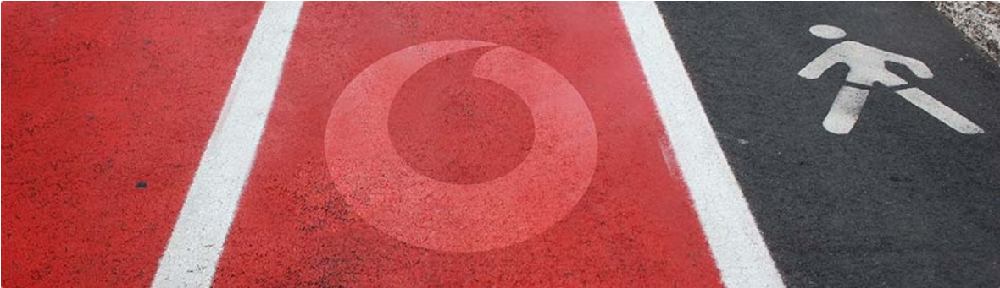

Missão
Melhorar a qualidade de vida das pessoas, aumentar a produtividade das empresas, contribuir para o desenvolvimento da sociedade da informação e do conhecimento e criar valor para Portugal.
Melhorar a qualidade de vida das pessoas, aumentar a produtividade das empresas, contribuir para o desenvolvimento da sociedade da informação e do conhecimento e criar valor para Portugal.
Tv Net Voz
Telemóveis
Acessórios
Pacotes com Móvel
Presidente do Conselho de Administração da da Vadafone Portugal desde junho de 2014.
Pelouro da Área Financeira na Vodafone Portugal.
Pelouro da Unidade de Negócios Empresariais desde outubro de 2020.
Pelouro da Unidade de Negócios Particulares desde maio de 2020.
Pelouros dos Recursos Humanos, Infraestruturas e Responsabilidade Social desde janeiro de 2012.
Os nossos Colaboradores têm orgulho em fazer parte de uma Equipa motivada e ambiciosa, com uma forte cultura de trabalho que se baseia em três valores fundamentais:
Rapidez
Dinamizamos os mercados onde operamos.
Procuramos sempre os melhores resultados para o negócio.
Simplicidade
Não complicamos.
Tornamos mais fácil a vida dos nossos Clientes,
Colaboradores, Fornecedores e Parceiros.
Confiaça
Agimos com honestidade, integridade e justiça.
Somos leais e transparentes. Ouvimos quem nos rodeia.